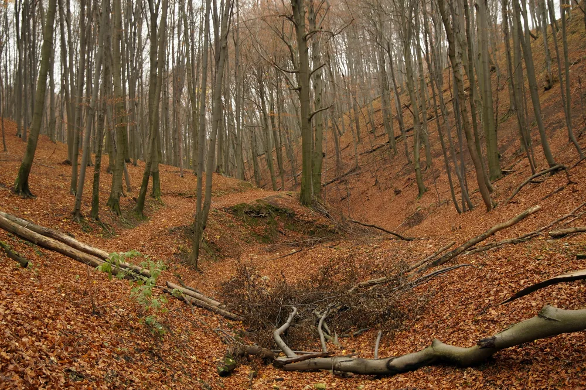
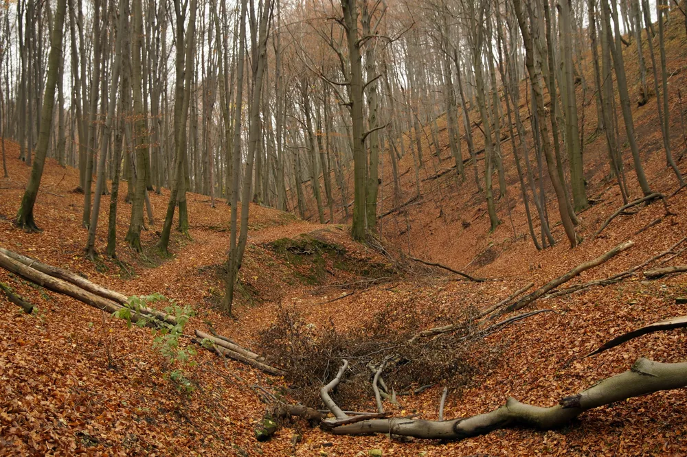

Az Ősz nappal
Utazás az ördög árokban
Az ördög árokban való utazás az őszi
időszak szellős hűvös óráiban,
egy túra keretein belül lett fölfedezve.
Hosszú, kellemes út volt és persze nagyon
látványos főleg az őszi színek árnyalatában.
 

Az őszről röviden...
Az ősz a mérsékelt öv egyik évszaka. Trópusi, illetve száraz és hideg égövi tájakon nem létezik.
A Föld északi féltekéjén szeptember, október és november, míg a Föld déli féltekéjén március, április és május az ősz hónapjai. Az ősz a nyár és a tél között
helyezkedik el, fő jellemzője a napok rövidülése, a hőmérséklet csökkenése és a lombhullató fák lombjának zöldről sárgává-pirossá színeződése majd lehullása.
Hagyományosan a legtöbb országban ősszel nyitnak az iskolák, indul a tanítás. Ősz a termények betakarításának, a szőlő szüretelésének ideje is.
Az ősz fő ünnepei az elmúláshoz kapcsolódnak: november 1. előestéje az angolszász országokban Halloween, november 1. Mindenszentek és november 2. Halottak
napja.